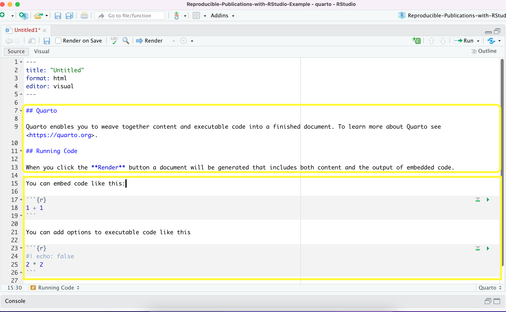

Introduction to Working with Quarto documents
Overview
Teaching: 20 min
Exercises: 5 minQuestions
What is the breakdown of a Quarto document?
What are templates in Quarto?
How can you render the input file to the specified output format?
How can you create pre-formatted for qmd document based on journal templates?
Objectives
Learn about the structure of a quarto document.
Learn how an quarto document works.
Learn how to render a .qmd file into an output format.
Understand what are jornal formats are and the advantage of using them.
Learn how to start a Quarto document in RStudio.
Anatomy of a Quarto Document
The key to our reproducible workflow is using Quarto files in RStudio rather than basic scripts to dynamically render both code and paper narrative. So let’s do a quick anatomy lesson on the components of an Quarto file (YAML header, Quarto formatted, R code blocks; also known as “code chunks”) and how to render them into our final formatted document. There are four distinct steps in the Quarto workflow:
- create a YAML header (optional)
- write Quarto-formatted text
- add R code blocks for embedded analysis
- render the document with the selected engine (Knitr in this example)

Let’s dig in to those more:
1. YAML header:
What is YAML anyway?
YAML, pronounced “Yeah-mul” stands for “YAML Ain’t Markup Language”. YAML is a human-readable data-serialization language which, as its name suggests, is not a markup language. YAML has no executable commands though it is compatible with all programming languages and virtually any application that deals with storing or transmiting data. YAML itself is made up of bits of many languages including Perl, MIME, C, & HTML. YAML is also a superset of JSON. When used as a stand-alone file the file ending is .yml or .yaml.
Quarto default YAML header includes the following metadata surrounded by three dashes ---:
- title
- author
- format
- editor

The format is selected in the wizard for starting a new document. You are able to pick from pdf, html, and word document. Basically, this allows you to export your qmd file as a file type of your choice. There are other options for output format and even more can be added by installing certain packages, but these are the three default options.
We’ll see other formatting options for YAML later on including how to add bibliography information, customize our output, and change the default settings for executing your code. Below is an example of how our YAML file will look at the end of this workshop.
---
---
title: "Data Article: Trier social stress test and food-choice: Behavioral, self-report & hormonal data (Carpentry Workshop Version)"
author: "Felix Jan Nitsch; Manuela Sellitto; Tobias Kalenscher"
format: html
editor: visual
bibliography: references.bib
execute:
echo: true
...
---
---
2. Formatted text:
This one is simple, it’s literally just text narrative formatted by using markdown (more on markdown syntax later). Markdown-formatted text is one of the benefits added above and beyond the capabilities of a regular r script. Any text section will have the default white background in the qmd document. As you might know, in a regular R file, # starts a comment. In Quarto, plain text is just plain narrative text that appears in the document. In R scripts, plain text wants to be code. In Quarto, you will need to enclose your code in special characters. Any symbols you do see that aren’t regular grammar components are for formatting, such as ##, ** **, and < >.
Tip: Bonus! You can use a variety of languages to format text and images in Quarto:
- Quarto
- HTML
- LaTeX
- CSS
3. Code Blocks:
Code blocks appear highlighted in gray throughout the qmd document. They are surrounded by three tick marks on either side (```) in source mode with the starting three tick marks followed by curly brackets {}with some other code inside. The tick marks indicate the start of a code section and the bits found between the curly brackets {}indicate how R should read and display the code (more on this in the Knitr syntax episodes). These are the sections you add R code such as summary statistics, analysis, tables and plots. If you’ve already written an R script you can copy and paste your code between the few lines of required formatting to embed & run whichever piece you want at that particular spot in the document.
Tip: Bonus! You may code with many different languages in RStudio:
- R
- Python
- Bash
- SQL
A complete list of compatible languages can be found at: https://rmarkdown.rstudio.com/lesson-5.html
Let’s take a look at the Quarto document template we have just created to see how formatted text and code are represented.

4. Rendering your Qmd document:
Simply put, rendering is the process of converting a document into a file format or a medium that is paginated or has the concept of pages. Clicking the render button will compile the code, check for errors, and finally, output the type of file indicated in your yaml header. You may select the option “Render on Save” to see a preview of your document every time you save edits. Attention: your qmd document may not run and render as your indicated output if there are any errors in the document so it also functions somewhat as a code checker.
Try it yourself!
We’re going to pause here and see what the Quarto document does when it’s rendered. We’ll just use the generic template, but when we’re working on our own project, rendering periodically while we’re editing allows us to catch any mistakes early. We’ll continue rendering our qmd throughout the lesson to see what happens when we add our markdown and knitr syntax and to make sure we aren’t making any errors.
This is a little preview of what’s to come in the later episodes: Click the “render” button.
Before you can render your document, you’ll need to give it a file name and choose what folder you want to save it to. Choose my_first_qmd.qmd as your file name and save it to an easily accessible directory in your file system.
Your document should render like that:

Warning: Enable Pop-ups!
If using the Jupyter Hub RStudio set up, you may not see your preview until you enable pop-ups, since the webrowser of your choice may block pop-ups by default.
CHALLENGE 3.1 - Rendering the document in another format
Suppose you want this .qmd document to render as a word document. What options would you have?
Solution:
You may change the output format in the YAML to
docx. Note that to preview word documents you need to have MS Word, Libre or Open Office installed on your machine. Alternatively, you may enter the following command in the terminal: `quarto render my_first_qmd.qmd –to docx
Note about PDFs
In order to create PDFs you will need to install a recent distribution of LaTeX. We recommend the use of TinyTeX, which you can install with the following command:
quarto install tool tinytex.
Creating Pre-formatted Papers (Demonstration Only)
We have learned how to start a new document on RStudio and we will learn good practices for project organization next. But, let’s say you are writing a paper having a journal in mind? Writing it in your own style and then formatting prior to submission will duplicate your work, right? The good news is that RStudio and Quarto can give us a hand with that.
Quarto offers some journal formats and made them available within the quarto-journals GitHub organization, including:
- Association of Computing Machinery
- American Chemical Society
- Biophysical journal
- Elsevier Journals
- American Statistical Association Journals
- Journal of Statistical Software
- Public Library of Science
This list is expected to rapidly grow with new contributions submitted to the Quarto Journal Templates Repository. You may also create your own templates following these guidelines.
Journal templates require features of Quarto version 1.2 so we need to ensure we have the right Quarto version. You can check your Quarto version in the Terminal with command: quarto --version. We should be good with that for this workshop, but if you are using a lab computer later on, you may need to update Quarto. See: pre-release versions of Quarto
Quarto uses a template command that can be called in the terminal to create an article in any of these formats. Suppose you want to use the Elsevier template. In Rstudio, in the terminal (if not showing, select Tools > Terminal > New), type quarto use template quarto-journals/elsevier. Then, follow the steps below:
- 1) Trust the authors:
? Do you trust the authors of this template (Y/n) › Yes - 2) Give a name to the directory ` ? Directory name: › elsevier-template`
This will install the extension and create an example qmd file and bibiography with all required files that you can use as a starting place for your article:

Locate the directory where you have saved the template. You can make a copy of elsevier-template.qmd document or rename it as start writing your paper following the journal’s formatting requirements.
It is beyond the scope of this workshop to cover journal templates more extensively, but if you want to explore further how to apply templates, apply styling and even create your own templates, check the Quarto Journals GitHub page.
Tip
Before proceeding always check if the template of interest meets the most updated guidelines in the journal website, since these templates are maintained by the Quarto community, not the journal editors.
Key Points
An qmd file is comprised of a YAML header, formatted text in qmd and code blocks.
The render function converts the file into the chosen output format.
Rstudio has some journals’ formats that can save you some time or you can make your own for frequent submissions.